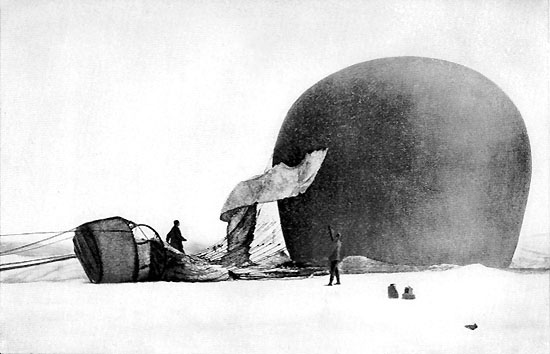
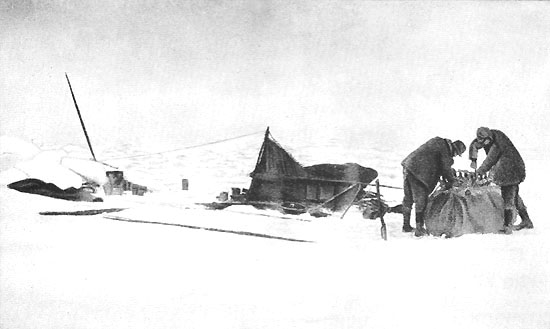
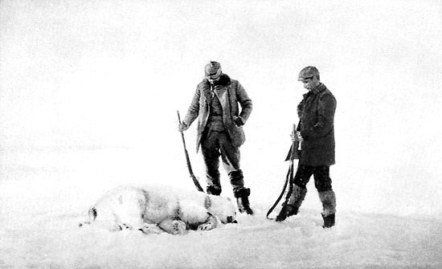
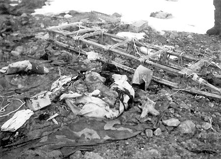

Gallery

The famous image of the balloon crash landing.

The trio goes through their packing before the journey home.

Andrée and Nils have shot a polar bear for dinner.

Norwegians discover the camp after the adventurers 33 years later.